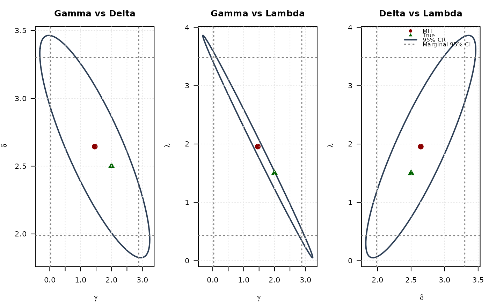
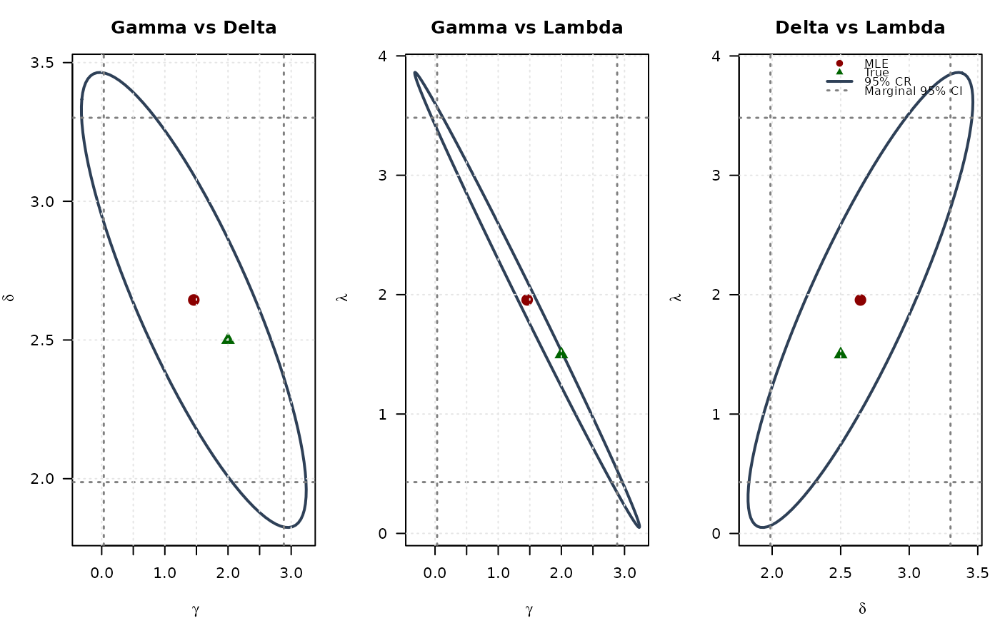

Hessian Matrix of the Negative Log-Likelihood for the McDonald (Mc)/Beta Power Distribution
Source:R/RcppExports.R
hsmc.RdComputes the analytic 3x3 Hessian matrix (matrix of second partial derivatives)
of the negative log-likelihood function for the McDonald (Mc) distribution
(also known as Beta Power) with parameters gamma (\(\gamma\)),
delta (\(\delta\)), and lambda (\(\lambda\)). This distribution
is the special case of the Generalized Kumaraswamy (GKw) distribution where
\(\alpha = 1\) and \(\beta = 1\). The Hessian is useful for estimating
standard errors and in optimization algorithms.
Value
Returns a 3x3 numeric matrix representing the Hessian matrix of the
negative log-likelihood function, \(-\partial^2 \ell / (\partial \theta_i \partial \theta_j)\),
where \(\theta = (\gamma, \delta, \lambda)\).
Returns a 3x3 matrix populated with NaN if any parameter values are
invalid according to their constraints, or if any value in data is
not in the interval (0, 1).
Details
This function calculates the analytic second partial derivatives of the
negative log-likelihood function (\(-\ell(\theta|\mathbf{x})\)).
The components are based on the second derivatives of the log-likelihood \(\ell\)
(derived from the PDF in dmc).
Note: The formulas below represent the second derivatives of the positive log-likelihood (\(\ell\)). The function returns the negative of these values. Users should verify these formulas independently if using for critical applications.
$$ \frac{\partial^2 \ell}{\partial \gamma^2} = -n[\psi'(\gamma) - \psi'(\gamma+\delta+1)] $$ $$ \frac{\partial^2 \ell}{\partial \gamma \partial \delta} = -n\psi'(\gamma+\delta+1) $$ $$ \frac{\partial^2 \ell}{\partial \gamma \partial \lambda} = \sum_{i=1}^{n}\ln(x_i) $$ $$ \frac{\partial^2 \ell}{\partial \delta^2} = -n[\psi'(\delta+1) - \psi'(\gamma+\delta+1)] $$ $$ \frac{\partial^2 \ell}{\partial \delta \partial \lambda} = -\sum_{i=1}^{n}\frac{x_i^{\lambda}\ln(x_i)}{1-x_i^{\lambda}} $$ $$ \frac{\partial^2 \ell}{\partial \lambda^2} = -\frac{n}{\lambda^2} - \delta\sum_{i=1}^{n}\frac{x_i^{\lambda}[\ln(x_i)]^2}{(1-x_i^{\lambda})^2} $$
where \(\psi'(\cdot)\) is the trigamma function (trigamma).
(Note: The formula for \(\partial^2 \ell / \partial \lambda^2\) provided in the source
comment was different and potentially related to the expected information matrix;
the formula shown here is derived from the gradient provided earlier. Verification
is recommended.)
The returned matrix is symmetric, with rows/columns corresponding to \(\gamma, \delta, \lambda\).
References
McDonald, J. B. (1984). Some generalized functions for the size distribution of income. Econometrica, 52(3), 647-663.
Cordeiro, G. M., & de Castro, M. (2011). A new family of generalized distributions. Journal of Statistical Computation and Simulation,
(Note: Specific Hessian formulas might be derived or sourced from additional references).
Examples
# \donttest{
## Example 1: Basic Hessian Evaluation
# Generate sample data with more stable parameters
set.seed(123)
n <- 1000
true_params <- c(gamma = 2.0, delta = 2.5, lambda = 1.5)
data <- rmc(n, gamma = true_params[1], delta = true_params[2],
lambda = true_params[3])
# Evaluate Hessian at true parameters
hess_true <- hsmc(par = true_params, data = data)
cat("Hessian matrix at true parameters:\n")
#> Hessian matrix at true parameters:
print(hess_true, digits = 4)
#> [,1] [,2] [,3]
#> [1,] 445.6 -199.3 783.2
#> [2,] -199.3 131.0 -369.8
#> [3,] 783.2 -369.8 1416.2
# Check symmetry
cat("\nSymmetry check (max |H - H^T|):",
max(abs(hess_true - t(hess_true))), "\n")
#>
#> Symmetry check (max |H - H^T|): 0
## Example 2: Hessian Properties at MLE
# Fit model
fit <- optim(
par = c(1.5, 2.0, 1.0),
fn = llmc,
gr = grmc,
data = data,
method = "BFGS",
hessian = TRUE
)
mle <- fit$par
names(mle) <- c("gamma", "delta", "lambda")
# Hessian at MLE
hessian_at_mle <- hsmc(par = mle, data = data)
cat("\nHessian at MLE:\n")
#>
#> Hessian at MLE:
print(hessian_at_mle, digits = 4)
#> [,1] [,2] [,3]
#> [1,] 754.3 -216.43 783.2
#> [2,] -216.4 99.01 -238.6
#> [3,] 783.2 -238.57 820.1
# Compare with optim's numerical Hessian
cat("\nComparison with optim Hessian:\n")
#>
#> Comparison with optim Hessian:
cat("Max absolute difference:",
max(abs(hessian_at_mle - fit$hessian)), "\n")
#> Max absolute difference: 0.0002574136
# Eigenvalue analysis
eigenvals <- eigen(hessian_at_mle, only.values = TRUE)$values
cat("\nEigenvalues:\n")
#>
#> Eigenvalues:
print(eigenvals)
#> [1] 1638.4186859 34.1207859 0.8213602
cat("\nPositive definite:", all(eigenvals > 0), "\n")
#>
#> Positive definite: TRUE
cat("Condition number:", max(eigenvals) / min(eigenvals), "\n")
#> Condition number: 1994.763
## Example 3: Standard Errors and Confidence Intervals
# Observed information matrix
obs_info <- hessian_at_mle
# Variance-covariance matrix
vcov_matrix <- solve(obs_info)
cat("\nVariance-Covariance Matrix:\n")
#>
#> Variance-Covariance Matrix:
print(vcov_matrix, digits = 6)
#> [,1] [,2] [,3]
#> [1,] 0.528826 -0.203770 -0.564330
#> [2,] -0.203770 0.112290 0.227275
#> [3,] -0.564330 0.227275 0.606294
# Standard errors
se <- sqrt(diag(vcov_matrix))
names(se) <- c("gamma", "delta", "lambda")
# Correlation matrix
corr_matrix <- cov2cor(vcov_matrix)
cat("\nCorrelation Matrix:\n")
#>
#> Correlation Matrix:
print(corr_matrix, digits = 4)
#> [,1] [,2] [,3]
#> [1,] 1.0000 -0.8362 -0.9966
#> [2,] -0.8362 1.0000 0.8710
#> [3,] -0.9966 0.8710 1.0000
# Confidence intervals
z_crit <- qnorm(0.975)
results <- data.frame(
Parameter = c("gamma", "delta", "lambda"),
True = true_params,
MLE = mle,
SE = se,
CI_Lower = mle - z_crit * se,
CI_Upper = mle + z_crit * se
)
print(results, digits = 4)
#> Parameter True MLE SE CI_Lower CI_Upper
#> gamma gamma 2.0 1.458 0.7272 0.03292 2.884
#> delta delta 2.5 2.644 0.3351 1.98755 3.301
#> lambda lambda 1.5 1.956 0.7786 0.42971 3.482
## Example 4: Determinant and Trace Analysis
# Compute at different points
test_params <- rbind(
c(1.5, 2.0, 1.0),
c(2.0, 2.5, 1.5),
mle,
c(2.5, 3.0, 2.0)
)
hess_properties <- data.frame(
Gamma = numeric(),
Delta = numeric(),
Lambda = numeric(),
Determinant = numeric(),
Trace = numeric(),
Min_Eigenval = numeric(),
Max_Eigenval = numeric(),
Cond_Number = numeric(),
stringsAsFactors = FALSE
)
for (i in 1:nrow(test_params)) {
H <- hsmc(par = test_params[i, ], data = data)
eigs <- eigen(H, only.values = TRUE)$values
hess_properties <- rbind(hess_properties, data.frame(
Gamma = test_params[i, 1],
Delta = test_params[i, 2],
Lambda = test_params[i, 3],
Determinant = det(H),
Trace = sum(diag(H)),
Min_Eigenval = min(eigs),
Max_Eigenval = max(eigs),
Cond_Number = max(eigs) / min(eigs)
))
}
cat("\nHessian Properties at Different Points:\n")
#>
#> Hessian Properties at Different Points:
print(hess_properties, digits = 4, row.names = FALSE)
#> Gamma Delta Lambda Determinant Trace Min_Eigenval Max_Eigenval Cond_Number
#> 1.500 2.000 1.000 -28036436 3709 -19.4941 3292 -168.864
#> 2.000 2.500 1.500 569493 1993 8.3039 1949 234.745
#> 1.458 2.644 1.956 45917 1673 0.8214 1638 1994.763
#> 2.500 3.000 2.000 -20506346 1293 -238.7457 1473 -6.171
## Example 5: Curvature Visualization (All pairs side by side)
# Create grids around MLE with wider range (±1.5)
gamma_grid <- seq(mle[1] - 1.5, mle[1] + 1.5, length.out = 25)
delta_grid <- seq(mle[2] - 1.5, mle[2] + 1.5, length.out = 25)
lambda_grid <- seq(mle[3] - 1.5, mle[3] + 1.5, length.out = 25)
gamma_grid <- gamma_grid[gamma_grid > 0]
delta_grid <- delta_grid[delta_grid > 0]
lambda_grid <- lambda_grid[lambda_grid > 0]
# Compute curvature measures for all pairs
determinant_surface_gd <- matrix(NA, nrow = length(gamma_grid), ncol = length(delta_grid))
trace_surface_gd <- matrix(NA, nrow = length(gamma_grid), ncol = length(delta_grid))
determinant_surface_gl <- matrix(NA, nrow = length(gamma_grid), ncol = length(lambda_grid))
trace_surface_gl <- matrix(NA, nrow = length(gamma_grid), ncol = length(lambda_grid))
determinant_surface_dl <- matrix(NA, nrow = length(delta_grid), ncol = length(lambda_grid))
trace_surface_dl <- matrix(NA, nrow = length(delta_grid), ncol = length(lambda_grid))
# Gamma vs Delta
for (i in seq_along(gamma_grid)) {
for (j in seq_along(delta_grid)) {
H <- hsmc(c(gamma_grid[i], delta_grid[j], mle[3]), data)
determinant_surface_gd[i, j] <- det(H)
trace_surface_gd[i, j] <- sum(diag(H))
}
}
# Gamma vs Lambda
for (i in seq_along(gamma_grid)) {
for (j in seq_along(lambda_grid)) {
H <- hsmc(c(gamma_grid[i], mle[2], lambda_grid[j]), data)
determinant_surface_gl[i, j] <- det(H)
trace_surface_gl[i, j] <- sum(diag(H))
}
}
# Delta vs Lambda
for (i in seq_along(delta_grid)) {
for (j in seq_along(lambda_grid)) {
H <- hsmc(c(mle[1], delta_grid[i], lambda_grid[j]), data)
determinant_surface_dl[i, j] <- det(H)
trace_surface_dl[i, j] <- sum(diag(H))
}
}
# Plot all curvature surfaces side by side
par(mfrow = c(2, 3), mar = c(4, 4, 3, 1))
# Determinant plots
contour(gamma_grid, delta_grid, determinant_surface_gd,
xlab = expression(gamma), ylab = expression(delta),
main = "Determinant: Gamma vs Delta", las = 1,
col = "#2E4057", lwd = 1.5, nlevels = 15)
points(mle[1], mle[2], pch = 19, col = "#8B0000", cex = 1.5)
points(true_params[1], true_params[2], pch = 17, col = "#006400", cex = 1.5)
grid(col = "gray90")
contour(gamma_grid, lambda_grid, determinant_surface_gl,
xlab = expression(gamma), ylab = expression(lambda),
main = "Determinant: Gamma vs Lambda", las = 1,
col = "#2E4057", lwd = 1.5, nlevels = 15)
points(mle[1], mle[3], pch = 19, col = "#8B0000", cex = 1.5)
points(true_params[1], true_params[3], pch = 17, col = "#006400", cex = 1.5)
grid(col = "gray90")
contour(delta_grid, lambda_grid, determinant_surface_dl,
xlab = expression(delta), ylab = expression(lambda),
main = "Determinant: Delta vs Lambda", las = 1,
col = "#2E4057", lwd = 1.5, nlevels = 15)
points(mle[2], mle[3], pch = 19, col = "#8B0000", cex = 1.5)
points(true_params[2], true_params[3], pch = 17, col = "#006400", cex = 1.5)
grid(col = "gray90")
# Trace plots
contour(gamma_grid, delta_grid, trace_surface_gd,
xlab = expression(gamma), ylab = expression(delta),
main = "Trace: Gamma vs Delta", las = 1,
col = "#2E4057", lwd = 1.5, nlevels = 15)
points(mle[1], mle[2], pch = 19, col = "#8B0000", cex = 1.5)
points(true_params[1], true_params[2], pch = 17, col = "#006400", cex = 1.5)
grid(col = "gray90")
contour(gamma_grid, lambda_grid, trace_surface_gl,
xlab = expression(gamma), ylab = expression(lambda),
main = "Trace: Gamma vs Lambda", las = 1,
col = "#2E4057", lwd = 1.5, nlevels = 15)
points(mle[1], mle[3], pch = 19, col = "#8B0000", cex = 1.5)
points(true_params[1], true_params[3], pch = 17, col = "#006400", cex = 1.5)
grid(col = "gray90")
contour(delta_grid, lambda_grid, trace_surface_dl,
xlab = expression(delta), ylab = expression(lambda),
main = "Trace: Delta vs Lambda", las = 1,
col = "#2E4057", lwd = 1.5, nlevels = 15)
points(mle[2], mle[3], pch = 19, col = "#8B0000", cex = 1.5)
points(true_params[2], true_params[3], pch = 17, col = "#006400", cex = 1.5)
grid(col = "gray90")
legend("topright",
legend = c("MLE", "True"),
col = c("#8B0000", "#006400"),
pch = c(19, 17),
bty = "n", cex = 0.8)
 par(mfrow = c(1, 1))
## Example 6: Confidence Ellipses (All pairs side by side)
# Extract all 2x2 submatrices
vcov_gd <- vcov_matrix[1:2, 1:2]
vcov_gl <- vcov_matrix[c(1, 3), c(1, 3)]
vcov_dl <- vcov_matrix[2:3, 2:3]
# Create confidence ellipses
theta <- seq(0, 2 * pi, length.out = 100)
chi2_val <- qchisq(0.95, df = 2)
# Gamma vs Delta ellipse
eig_decomp_gd <- eigen(vcov_gd)
ellipse_gd <- matrix(NA, nrow = 100, ncol = 2)
for (i in 1:100) {
v <- c(cos(theta[i]), sin(theta[i]))
ellipse_gd[i, ] <- mle[1:2] + sqrt(chi2_val) *
(eig_decomp_gd$vectors %*% diag(sqrt(eig_decomp_gd$values)) %*% v)
}
# Gamma vs Lambda ellipse
eig_decomp_gl <- eigen(vcov_gl)
ellipse_gl <- matrix(NA, nrow = 100, ncol = 2)
for (i in 1:100) {
v <- c(cos(theta[i]), sin(theta[i]))
ellipse_gl[i, ] <- mle[c(1, 3)] + sqrt(chi2_val) *
(eig_decomp_gl$vectors %*% diag(sqrt(eig_decomp_gl$values)) %*% v)
}
# Delta vs Lambda ellipse
eig_decomp_dl <- eigen(vcov_dl)
ellipse_dl <- matrix(NA, nrow = 100, ncol = 2)
for (i in 1:100) {
v <- c(cos(theta[i]), sin(theta[i]))
ellipse_dl[i, ] <- mle[2:3] + sqrt(chi2_val) *
(eig_decomp_dl$vectors %*% diag(sqrt(eig_decomp_dl$values)) %*% v)
}
# Marginal confidence intervals
se_gd <- sqrt(diag(vcov_gd))
ci_gamma_gd <- mle[1] + c(-1, 1) * 1.96 * se_gd[1]
ci_delta_gd <- mle[2] + c(-1, 1) * 1.96 * se_gd[2]
se_gl <- sqrt(diag(vcov_gl))
ci_gamma_gl <- mle[1] + c(-1, 1) * 1.96 * se_gl[1]
ci_lambda_gl <- mle[3] + c(-1, 1) * 1.96 * se_gl[2]
se_dl <- sqrt(diag(vcov_dl))
ci_delta_dl <- mle[2] + c(-1, 1) * 1.96 * se_dl[1]
ci_lambda_dl <- mle[3] + c(-1, 1) * 1.96 * se_dl[2]
# Plot all three ellipses side by side
par(mfrow = c(1, 3), mar = c(4, 4, 3, 1))
# Gamma vs Delta
plot(ellipse_gd[, 1], ellipse_gd[, 2], type = "l", lwd = 2, col = "#2E4057",
xlab = expression(gamma), ylab = expression(delta),
main = "Gamma vs Delta", las = 1, xlim = range(ellipse_gd[, 1], ci_gamma_gd),
ylim = range(ellipse_gd[, 2], ci_delta_gd))
abline(v = ci_gamma_gd, col = "#808080", lty = 3, lwd = 1.5)
abline(h = ci_delta_gd, col = "#808080", lty = 3, lwd = 1.5)
points(mle[1], mle[2], pch = 19, col = "#8B0000", cex = 1.5)
points(true_params[1], true_params[2], pch = 17, col = "#006400", cex = 1.5)
grid(col = "gray90")
# Gamma vs Lambda
plot(ellipse_gl[, 1], ellipse_gl[, 2], type = "l", lwd = 2, col = "#2E4057",
xlab = expression(gamma), ylab = expression(lambda),
main = "Gamma vs Lambda", las = 1, xlim = range(ellipse_gl[, 1], ci_gamma_gl),
ylim = range(ellipse_gl[, 2], ci_lambda_gl))
abline(v = ci_gamma_gl, col = "#808080", lty = 3, lwd = 1.5)
abline(h = ci_lambda_gl, col = "#808080", lty = 3, lwd = 1.5)
points(mle[1], mle[3], pch = 19, col = "#8B0000", cex = 1.5)
points(true_params[1], true_params[3], pch = 17, col = "#006400", cex = 1.5)
grid(col = "gray90")
# Delta vs Lambda
plot(ellipse_dl[, 1], ellipse_dl[, 2], type = "l", lwd = 2, col = "#2E4057",
xlab = expression(delta), ylab = expression(lambda),
main = "Delta vs Lambda", las = 1, xlim = range(ellipse_dl[, 1], ci_delta_dl),
ylim = range(ellipse_dl[, 2], ci_lambda_dl))
abline(v = ci_delta_dl, col = "#808080", lty = 3, lwd = 1.5)
abline(h = ci_lambda_dl, col = "#808080", lty = 3, lwd = 1.5)
points(mle[2], mle[3], pch = 19, col = "#8B0000", cex = 1.5)
points(true_params[2], true_params[3], pch = 17, col = "#006400", cex = 1.5)
grid(col = "gray90")
legend("topright",
legend = c("MLE", "True", "95% CR", "Marginal 95% CI"),
col = c("#8B0000", "#006400", "#2E4057", "#808080"),
pch = c(19, 17, NA, NA),
lty = c(NA, NA, 1, 3),
lwd = c(NA, NA, 2, 1.5),
bty = "n", cex = 0.8)

par(mfrow = c(1, 1))
# }
par(mfrow = c(1, 1))
## Example 6: Confidence Ellipses (All pairs side by side)
# Extract all 2x2 submatrices
vcov_gd <- vcov_matrix[1:2, 1:2]
vcov_gl <- vcov_matrix[c(1, 3), c(1, 3)]
vcov_dl <- vcov_matrix[2:3, 2:3]
# Create confidence ellipses
theta <- seq(0, 2 * pi, length.out = 100)
chi2_val <- qchisq(0.95, df = 2)
# Gamma vs Delta ellipse
eig_decomp_gd <- eigen(vcov_gd)
ellipse_gd <- matrix(NA, nrow = 100, ncol = 2)
for (i in 1:100) {
v <- c(cos(theta[i]), sin(theta[i]))
ellipse_gd[i, ] <- mle[1:2] + sqrt(chi2_val) *
(eig_decomp_gd$vectors %*% diag(sqrt(eig_decomp_gd$values)) %*% v)
}
# Gamma vs Lambda ellipse
eig_decomp_gl <- eigen(vcov_gl)
ellipse_gl <- matrix(NA, nrow = 100, ncol = 2)
for (i in 1:100) {
v <- c(cos(theta[i]), sin(theta[i]))
ellipse_gl[i, ] <- mle[c(1, 3)] + sqrt(chi2_val) *
(eig_decomp_gl$vectors %*% diag(sqrt(eig_decomp_gl$values)) %*% v)
}
# Delta vs Lambda ellipse
eig_decomp_dl <- eigen(vcov_dl)
ellipse_dl <- matrix(NA, nrow = 100, ncol = 2)
for (i in 1:100) {
v <- c(cos(theta[i]), sin(theta[i]))
ellipse_dl[i, ] <- mle[2:3] + sqrt(chi2_val) *
(eig_decomp_dl$vectors %*% diag(sqrt(eig_decomp_dl$values)) %*% v)
}
# Marginal confidence intervals
se_gd <- sqrt(diag(vcov_gd))
ci_gamma_gd <- mle[1] + c(-1, 1) * 1.96 * se_gd[1]
ci_delta_gd <- mle[2] + c(-1, 1) * 1.96 * se_gd[2]
se_gl <- sqrt(diag(vcov_gl))
ci_gamma_gl <- mle[1] + c(-1, 1) * 1.96 * se_gl[1]
ci_lambda_gl <- mle[3] + c(-1, 1) * 1.96 * se_gl[2]
se_dl <- sqrt(diag(vcov_dl))
ci_delta_dl <- mle[2] + c(-1, 1) * 1.96 * se_dl[1]
ci_lambda_dl <- mle[3] + c(-1, 1) * 1.96 * se_dl[2]
# Plot all three ellipses side by side
par(mfrow = c(1, 3), mar = c(4, 4, 3, 1))
# Gamma vs Delta
plot(ellipse_gd[, 1], ellipse_gd[, 2], type = "l", lwd = 2, col = "#2E4057",
xlab = expression(gamma), ylab = expression(delta),
main = "Gamma vs Delta", las = 1, xlim = range(ellipse_gd[, 1], ci_gamma_gd),
ylim = range(ellipse_gd[, 2], ci_delta_gd))
abline(v = ci_gamma_gd, col = "#808080", lty = 3, lwd = 1.5)
abline(h = ci_delta_gd, col = "#808080", lty = 3, lwd = 1.5)
points(mle[1], mle[2], pch = 19, col = "#8B0000", cex = 1.5)
points(true_params[1], true_params[2], pch = 17, col = "#006400", cex = 1.5)
grid(col = "gray90")
# Gamma vs Lambda
plot(ellipse_gl[, 1], ellipse_gl[, 2], type = "l", lwd = 2, col = "#2E4057",
xlab = expression(gamma), ylab = expression(lambda),
main = "Gamma vs Lambda", las = 1, xlim = range(ellipse_gl[, 1], ci_gamma_gl),
ylim = range(ellipse_gl[, 2], ci_lambda_gl))
abline(v = ci_gamma_gl, col = "#808080", lty = 3, lwd = 1.5)
abline(h = ci_lambda_gl, col = "#808080", lty = 3, lwd = 1.5)
points(mle[1], mle[3], pch = 19, col = "#8B0000", cex = 1.5)
points(true_params[1], true_params[3], pch = 17, col = "#006400", cex = 1.5)
grid(col = "gray90")
# Delta vs Lambda
plot(ellipse_dl[, 1], ellipse_dl[, 2], type = "l", lwd = 2, col = "#2E4057",
xlab = expression(delta), ylab = expression(lambda),
main = "Delta vs Lambda", las = 1, xlim = range(ellipse_dl[, 1], ci_delta_dl),
ylim = range(ellipse_dl[, 2], ci_lambda_dl))
abline(v = ci_delta_dl, col = "#808080", lty = 3, lwd = 1.5)
abline(h = ci_lambda_dl, col = "#808080", lty = 3, lwd = 1.5)
points(mle[2], mle[3], pch = 19, col = "#8B0000", cex = 1.5)
points(true_params[2], true_params[3], pch = 17, col = "#006400", cex = 1.5)
grid(col = "gray90")
legend("topright",
legend = c("MLE", "True", "95% CR", "Marginal 95% CI"),
col = c("#8B0000", "#006400", "#2E4057", "#808080"),
pch = c(19, 17, NA, NA),
lty = c(NA, NA, 1, 3),
lwd = c(NA, NA, 2, 1.5),
bty = "n", cex = 0.8)

par(mfrow = c(1, 1))
# }